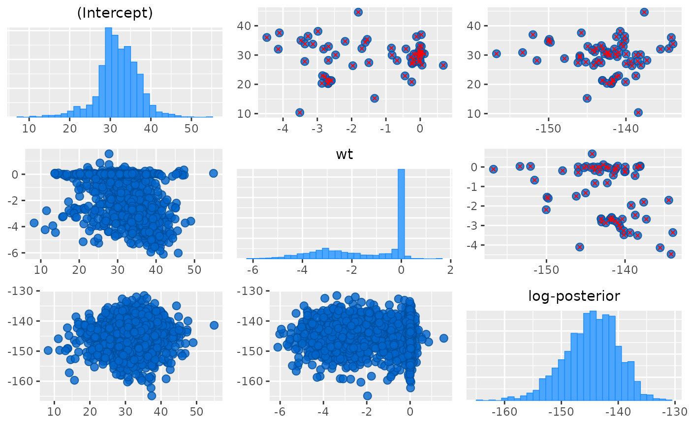

Interface to bayesplot's
mcmc_pairs function for use with
rstanarm models. Be careful not to specify too many parameters to
include or the plot will be both hard to read and slow to render.
Usage
# S3 method for class 'stanreg'
pairs(
x,
pars = NULL,
regex_pars = NULL,
condition = pairs_condition(nuts = "accept_stat__"),
...
)Arguments
- x
A fitted model object returned by one of the rstanarm modeling functions. See
stanreg-objects.- pars
An optional character vector of parameter names. All parameters are included by default, but for models with more than just a few parameters it may be far too many to visualize on a small computer screen and also may require substantial computing time.
- regex_pars
An optional character vector of regular expressions to use for parameter selection.
regex_parscan be used in place ofparsor in addition topars. Currently, all functions that accept aregex_parsargument ignore it for models fit using optimization.- condition
Same as the
conditionargument tomcmc_pairsexcept the default is different for rstanarm models. By default, themcmc_pairsfunction in the bayesplot package plots some of the Markov chains (half, in the case of an even number of chains) in the panels above the diagonal and the other half in the panels below the diagonal. However since we know that rstanarm models were fit using Stan (which bayesplot doesn't assume) we can make the default more useful by splitting the draws according to theaccept_stat__diagnostic. The plots below the diagonal will contain realizations that are below the medianaccept_stat__and the plots above the diagonal will contain realizations that are above the medianaccept_stat__. To change this behavior see the documentation of theconditionargument atmcmc_pairs.- ...
Optional arguments passed to
mcmc_pairs. Thenp,lp, andmax_treedeptharguments tomcmc_pairsare handled automatically by rstanarm and do not need to be specified by the user in.... The arguments that can be specified in...includetransformations,diag_fun,off_diag_fun,diag_args,off_diag_args, andnp_style. These arguments are documented thoroughly on the help page formcmc_pairs.
Examples
if (.Platform$OS.type != "windows" || .Platform$r_arch != "i386") {
# \donttest{
if (!exists("example_model")) example(example_model)
bayesplot::color_scheme_set("purple")
# see 'condition' argument above for details on the plots below and
# above the diagonal. default is to split by accept_stat__.
pairs(example_model, pars = c("(Intercept)", "log-posterior"))
# for demonstration purposes, intentionally fit a model that
# will (almost certainly) have some divergences
fit <- stan_glm(
mpg ~ ., data = mtcars,
iter = 1000,
# this combo of prior and adapt_delta should lead to some divergences
prior = hs(),
adapt_delta = 0.9,
refresh = 0
)
pairs(fit, pars = c("wt", "sigma", "log-posterior"))
# requires hexbin package
# pairs(
# fit,
# pars = c("wt", "sigma", "log-posterior"),
# transformations = list(sigma = "log"), # show log(sigma) instead of sigma
# off_diag_fun = "hex" # use hexagonal heatmaps instead of scatterplots
# )
bayesplot::color_scheme_set("brightblue")
pairs(
fit,
pars = c("(Intercept)", "wt", "sigma", "log-posterior"),
transformations = list(sigma = "log"),
off_diag_args = list(size = 3/4, alpha = 1/3), # size and transparency of scatterplot points
np_style = pairs_style_np(div_color = "black", div_shape = 2) # color and shape of the divergences
)
# Using the condition argument to show divergences above the diagonal
pairs(
fit,
pars = c("(Intercept)", "wt", "log-posterior"),
condition = pairs_condition(nuts = "divergent__")
)
# }
}
#> Warning: There were 67 divergent transitions after warmup. See
#> https://mc-stan.org/misc/warnings.html#divergent-transitions-after-warmup
#> to find out why this is a problem and how to eliminate them.
#> Warning: Examine the pairs() plot to diagnose sampling problems
#> Warning: Bulk Effective Samples Size (ESS) is too low, indicating posterior means and medians may be unreliable.
#> Running the chains for more iterations may help. See
#> https://mc-stan.org/misc/warnings.html#bulk-ess
#> Warning: Tail Effective Samples Size (ESS) is too low, indicating posterior variances and tail quantiles may be unreliable.
#> Running the chains for more iterations may help. See
#> https://mc-stan.org/misc/warnings.html#tail-ess
